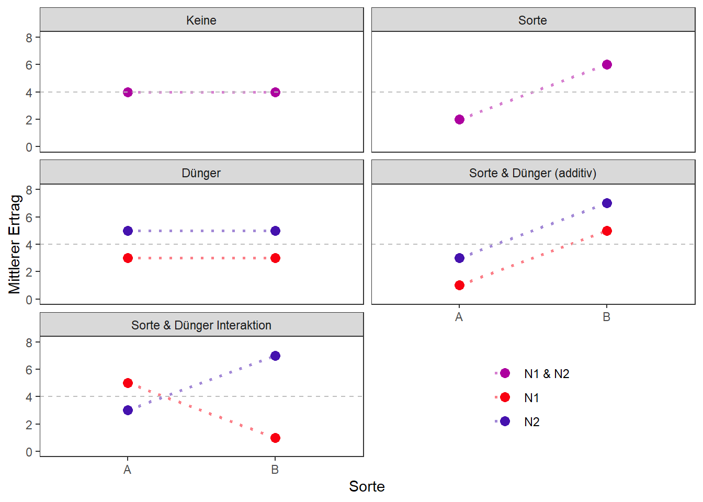

In einem Experiment, in dem mehrere Behandlungsfaktoren geprüft werden, kann es sein, dass es Wechselwirkungen zwischen den Behandlungen gibt. Folgendes Beispiel soll demonstrieren was damit gemeint ist.
In einem Experiment (egal welches Design) wird der Ertrag von zwei Sorten und zwei Stickstoffdüngern miteinander verglichen. Demnach haben wir zwei Behandlungsfaktoren (Sorte & N) mit jeweils zwei Stufen (Sorten A & B, Dünger N1 & N2), sodass es vier Stufenkombinationen gibt (A-N1, A-N2, B-N1 & B-N2). Vor dem Experiment ist natürlich nicht klar wie der Ertrag von den Behandlungen beeinflusst wird. Folgender Plot soll zeigen welche prinzipiellen Effekte die Behandlungen auf den Ertrag haben könnten:

Es muss klar sein, dass natürlich auch die andere Sorte bzw. der andere Stickstoff einen höheren Ertrag zeigen kann - das ist aber nicht Ziel dieses Plots. Was de verschiedenen Plots stattdessen zeigen ist beginnnend von oben links:
Wie gesagt ist vor dem Versuch nicht klar welche Behandlungseffekte es gibt. Um dies herauszufinden kann eine sogenannte backward elimination durchgeführt werden. Bei diesem Verfahren stellt man das volle Modell auf und eliminiert dann Schritt für Schritt die Einflussvariablen. Das volle Modell bezieht sich dabei auf den treatment Teil des Modells. Das bedeutet, dass also noch die design Effekte (z.B. block) des entsprechenden Versuchsdesigns dazukommen. Voll ist das Modell, da man vom untersten Plott, also von Wechselwirkungen der Effekte ausgeht:
y = Sorte + Dünger + Sorte:DüngerDann führt man eine ANOVA für das volle Modelle durch und betrachtet zuerst den “komplexesten” Term, also hier die Wechselwirkung Sorte:Dünger. Ist diese signifikant, so wird kein Term eliminiert und man hat das finale Modell gefunden. Ist der Term allerdings nicht signifikant, so eliminiert man ihn. Dann passt man im nächsten Schritt das reduzierte Modell an und schaut wieder auf die ANOVA. Dies führt man so lange durch, bis nur noch signifikante treatment Effekte im Modell sind - man eliminiert also alle nicht-signifikanten Effekte aus dem vollen Modell. Je nachdem welche Effekte eliminiert werden, endet man bei einem der Fälle aus dem Plot oben. Wichtig ist wie gesagt, dass man mit dem “komplexesten” Term beginnen muss. Wenn mehrere Terme der gleichen Komplexiztität vorhanden sind, wie bei uns in einem zweiten Schritt Sorte und Dünger, dann wird zuerst der Term mit dem höheren (=weniger signifikanten) p-Wert eliminiert. Hier ist eine Übersicht der Modelle, die den Plots oben entsprechen.
| Plot | Syntax | Formel (für CRD) |
|---|---|---|
| Keine | y = |
\(y_{ijk} = \mu + e_{ijk}\) |
| Sorte | y = Sorte |
\(y_{ijk} = \mu + S_i + e_{ijk}\) |
| Dünger | y = Dünger |
\(y_{ijk} = \mu + D_j + e_{ijk}\) |
| Sorte & Dünger (additiv) | y = Sorte + Dünger |
\(y_{ijk} = \mu + S_i + D_j + e_{ijk}\) |
| Sorte & Dünger (Interaktion) | y = Sorte + Dünger + Sorte:Dünger |
\(y_{ijk} = \mu + S_i + D_j + (SD)_{ij} + e_{ijk}\) |
Wenn mehr als zwei Behandlungsfaktoren geprüft werden, gibt es auch mehr als eine potentielle Wechselwirkung:
| Anzahl | Name | Modell |
|---|---|---|
| 2 Faktoren | A & B |
A + B + A:B |
| 3 Faktoren | A, B & C |
A + B + C + A:B + A:C + B:C + A:B:C |
| 4 Faktoren | A, B, C & D |
A + B + C + D + A:B + … + B:C:D + A:B:C:D |
Die backward elimination funktioniert aber genau so wie oben beschrieben. Alternativ zum backward elimination Verfahren kann beispielsweise auch das forward selection Verfahren angewendet werden, bei dem vom leeren Modell ausgegangen wird und Schritt für Schritt ein signifikanter Termin hinzugefügt wird.